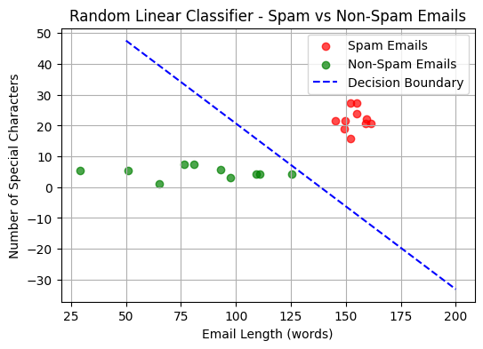
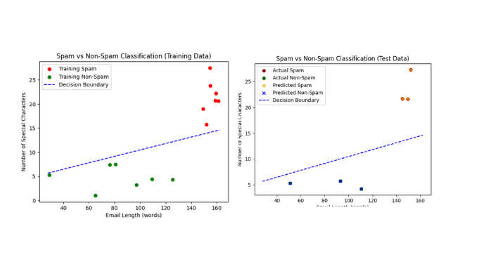

Building an ML Model: Understanding the Algorithm and Math Behind It
Ever wondered how machines learn to make decisions? Before we teach a machine to learn, it's important to understand the algorithms and mathematics behind it. In this blog, we will apply the six steps from our previous post to build a Random Linear Classifier from scratch, using it to classify emails as spam or non-spam. Along the way, we'll explore the key math behind each step and assess the model's performance to better understand how machine learning works.
In this blog, we will follow the six key steps involved in any machine learning algorithm: Getting data, generating hypotheses, defining the loss function, finding the algorithm, running the algorithm, and validating the results. While these are the core steps, it's important to note that there are other essential processes that help in refining the model. These include data cleaning, which ensures the data is accurate and free of errors, as well as data preprocessing and feature engineering, where we transform raw data into more suitable formats for the model.
In addition to these, data splitting is crucial, as we divide the dataset into training, validation, and test sets to evaluate the model's performance. Techniques like normalization and standardization are applied to scale features. Moreover, we'll explore hyperparameter tuning and cross-validation, which help optimize the model's accuracy. By the end of this post, we will have built a Random Linear Classifier from scratch to classify spam and non-spam emails, examined the mathematics behind each step, and evaluated how the model performs, considering all these important aspects along the way.
Step 1: Getting the Data
To train the Random Linear Classifier, we need to first gather the data that will be used to train the model. For this example, we have generated a synthetic dataset representing emails, where there are two features: email length and the number of special characters in the email. These two features will help differentiate between spam and non-spam emails.
We have the following synthetic data:
- Spam emails: Characterized by a higher email length and a higher number of special characters.
- Non-spam emails: Typically shorter emails with fewer special characters.
import numpy as np
# Set a seed for reproducibility
np.random.seed(0)
# Generate synthetic data for spam and non-spam emails with a smaller sample size
spam_email_length = np.random.normal(loc=150, scale=5, size=10)
spam_special_chars = np.random.normal(loc=20, scale=10, size=10)
nonspam_email_length = np.random.normal(loc=80, scale=20, size=10)
nonspam_special_chars = np.random.normal(loc=5, scale=2, size=10)
Step 2: Generate Hypotheses
After gathering the data, the next step is to generate hypotheses or ideas about how the features in the data might relate to whether an email is spam or not. We want to understand what characteristics might help us differentiate spam emails from non-spam emails.
For example, we might hypothesize that spam emails tend to be longer and have more special characters, while non-spam emails are shorter and contain fewer special characters. These initial ideas guide us in understanding how the data can help us make the correct classification.
The goal is to find a straight line that separates spam emails from non-spam emails based on these features. This line will act as a decision boundary. When a new email is input into the model, it should be able to classify it as spam or non-spam by checking which side of the line the email falls on, using the features like email length and special characters.
Now the Question How do we generate a hypothesis class for a linear classifier?
As this is a binary classification model, the aim is to predict one of two classes whether the email is spam or not based on the features of the data like the length of the email and the special character it is containing. The model then tries to draw a straight line that separates the two classes.
The hypothesis class for a linear classifier is defined by a linear equation:
h(x) = w₁·x₁ + w₂·x₂ + ⋯ + w_d·x_d + b
Where:
h(x)is the result of the equation (also called score).x₁, x₂, …, x_dare the features of the input (e.g., length, number of special char).w₁, w₂, …, w_dare the weights assigned to each feature (indicates how important each feature is).bis the bias term (shifts the decision boundary).
Once the model computes the score, it classifies the email based on the following rule:
- If the score
h(x)is greater than or equal to zero, I classify the email as spam (Class 1). - If the score
h(x)is less than zero, I classify the email as not spam (Class 2). - If
h(x) ≥ 0, predict Spam (Class 1). - If
h(x) < 0, predict Not Spam (Class 2).
The key task in generating the hypothesis class is to figure out the best values for the weights and the bias. we have to adjust these parameters so that the classifier can make accurate predictions. In essence, the hypothesis class represents a collection of all possible linear functions that define a decision boundary between the two classes.
Step 3 & 4: Choosing the Model and Loss Function
In this step, we'll first choose our model and then define the loss function. The model we're using is a linear classifier, specifically a Random Linear Classifier. This model works by drawing a straight line to separate spam emails from non-spam emails based on certain features, such as the length of the email and the number of special characters.
Now, to train this model effectively, we need to evaluate how well it performs at classifying emails. For this, we use a loss function—a way of measuring how far off the model's predictions are from the actual labels (spam or non-spam).
# Compute error function
def compute_error(data_spam, data_nonspam, theta, theta0):
error = 0
for x_spam in data_spam:
if np.dot(theta, x_spam) + theta0 <= 0:
error += 1
for x_nonspam in data_nonspam:
if np.dot(theta, x_nonspam) + theta0 > 0:
error += 1
return error
The compute error method serves as our loss function. It calculates the difference between the predicted and actual outcomes, and the goal is to minimize this error. This helps the model adjust its predictions and improve over time, ultimately learning to classify emails more accurately.
Step 5: Run the Algorithm
After organizing our data into features and labels, we passed it to our linear classifier model for analysis. To gain a clearer understanding of how our data is structured, we visualized it using a scatter plot. This visualization provided a clear picture of the distribution of spam and non-spam emails based on their features. The plot revealed a distinct separation between the two classes, suggesting that the dataset is well-prepared and suitable for classification.
# Prepare data for classification
data_spam = np.vstack((spam_email_length, spam_special_chars)).T
data_nonspam = np.vstack((nonspam_email_length, nonspam_special_chars)).T
# Random linear classifier function
def random_linear_classifier(data_spam, data_nonspam, k, d):
best_error = float('inf')
best_theta = None
best_theta0 = None
for _ in range(k):
theta = np.random.normal(size=d)
theta0 = np.random.normal()
error = compute_error(data_spam, data_nonspam, theta, theta0)
if error < best_error:
best_error = error
best_theta = theta
best_theta0 = theta0
return best_theta, best_theta0
# Apply the random linear classifier
k = 100
d = 2
best_theta, best_theta0 = random_linear_classifier(data_spam, data_nonspam, k, d)

Step 6: Validating the Results
Before diving into the validation step, let's address a critical question:
"We observed that our model performed well on our data, but how does it handle unseen data?"
This is the ultimate test of any machine learning model—its ability to generalize. To evaluate this, we need to take one important step further: splitting our data into a training set and a testing set.
By splitting the data, we allow the model to learn from the training set and then evaluate its performance on the unseen testing set. This ensures we're not just overfitting the data but building a model that performs well in real-world scenarios.
from sklearn.model_selection import train_test_split
# Split the spam and non-spam data into training and testing sets (70% for training, 30% for testing)
train_spam, test_spam = train_test_split(data_spam, test_size=0.3, random_state=42)
train_nonspam, test_nonspam = train_test_split(data_nonspam, test_size=0.3, random_state=42)
To evaluate our model's performance, we split the dataset into a training set (70%) and a testing set (30%). The training set is used to train the model, while the testing set helps us understand how well the model generalizes to unseen data.
Now, with the split completed, we'll analyze how the model performed on the testing set. By visualizing the classification results on a scatter plot, we can assess whether the model effectively separates spam and non-spam emails in the testing data.

Our model demonstrated excellent performance on both the training and testing sets. With a training error of 0, the model perfectly classified the training data. Additionally, when we evaluated the testing set, the testing error was also 0, indicating that the model is not only accurate on the data it was trained on but also robust and capable of generalizing effectively to unseen data.
Cross Validation
After splitting the data into training and testing sets, we evaluated how well the model performed on unseen data. One important step in building a reliable model is choosing the right parameters. For this project, selecting the best k value (used in k-fold cross-validation) was crucial.
To do this, we used k-fold cross-validation, which splits the training data into k smaller parts (or folds). The model is then trained and tested k times, with each fold being used for testing once and the rest for training. By averaging the results, we were able to get a better idea of how well the model could perform on new data.
Through cross-validation, we determined that the best k value for my model was 100, which helped improve its accuracy. This process fine-tuned the model, ensuring it works well on unseen data and improving its reliability. Afterward, we tested the model on the testing set, and we were pleased with the results.
Conclusion and What's Next?
In this blog, we've walked through the process of building a machine-learning model from scratch, using a linear classifier to classify spam and non-spam emails. We've seen how data preparation, hypothesis generation, loss function definition, and model training all contribute to creating a robust model. By splitting the data into training and testing sets, and validating our results with cross-validation, we ensured that our model could generalize well to new, unseen data.
But we're just scratching the surface! There's so much more to explore in the world of machine learning. In future posts, we will dive deeper into advanced models, optimization techniques, and real-world applications of machine learning.
Stay tuned for more exciting insights into how machine learning is transforming industries and how you can apply it to solve complex problems.
You can also find the complete code for this project in my GitHub repository.